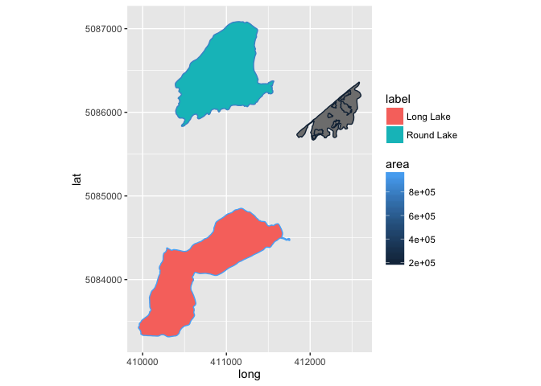
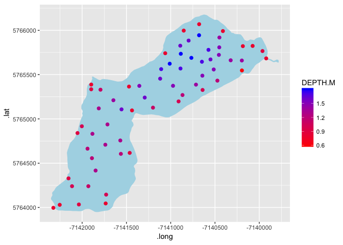
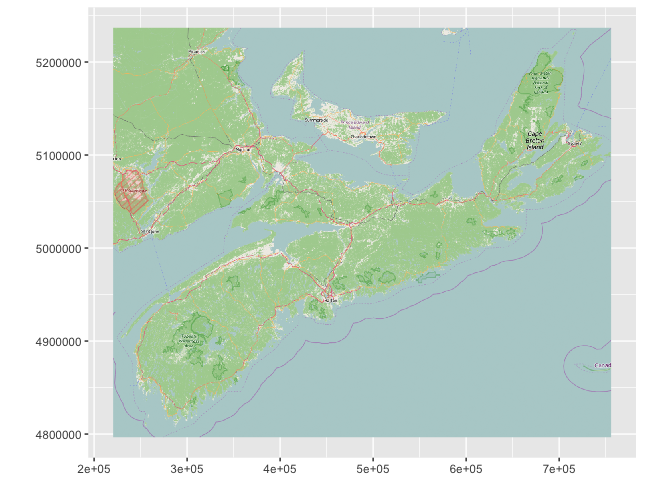
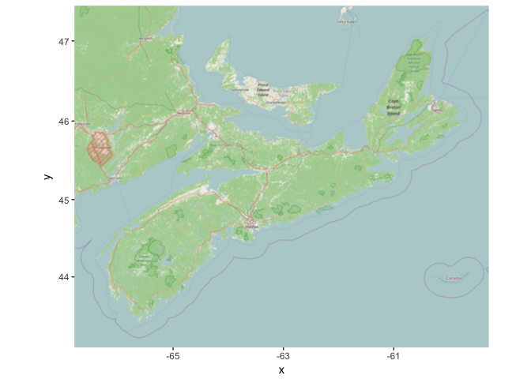
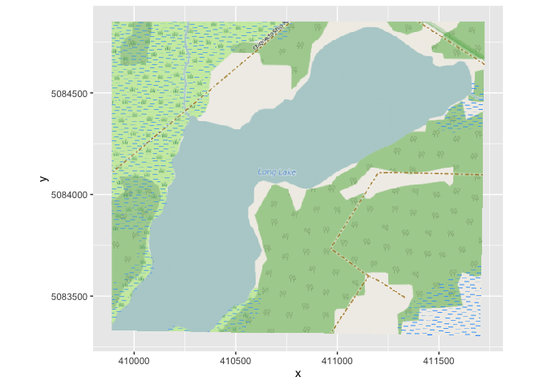

ggspatial
A spatial data framework for ggplot2
ggspatial: Spatial data framework for ggplot2
Spatial data plus the power of the ggplot2 framework means easier mapping for all! Unfortunately facetting with scales="free" doesn't work properly with coord_fixed(), so facetting is out if you want different extents in each facet window. But easy use of ggplot2 with sp, raster, and basemaps through the rosm package is a go!
Installation
There are no plans to release ggspatial to CRAN until the facetting/coord_fixed bug is fixed in ggplot, but you can install using devtools::install_github().
install.packages("devtools") # if devtools isn't installed
devtools::install_github("paleolimbot/ggspatial")Spatial objects
Many (but not all) objects of type Spatial* can be used with ggplot, but syntax is inconsistent and results vary. This package introduces a single geom_ for use with Spatial* objects (e.g. SpatialPointsDataFrame, SpatialLinesDataFrame, SpatialPolygonsDataFrame...essentially what you get when you use rgdal::readOGR() to read any kind of spatial data). A few datasets are included in the package as examples.
library(ggspatial)
data(longlake_waterdf)
ggplot() + geom_spatial(longlake_waterdf) + coord_fixed()
If we examine longlake_waterdf, we can use the columns as aesthetics just as we would for a normal data.frame.
names(longlake_waterdf)## [1] "OBJECTID_1" "OBJECTID" "FEAT_CODE" "HID" "PROVKEY"
## [6] "ZVALUE" "STARTDATE" "ENDDATE" "PRODUCT" "SCALE"
## [11] "COLLECTOR" "CAPTURE" "PRODYEAR" "PRODMONTH" "X_Y_ACC"
## [16] "Z_ACC" "MINZ" "MAXZ" "POLY_CLASS" "SHAPE_LENG"
## [21] "SHAPE_LE_1" "label" "area"
ggplot() + geom_spatial(longlake_waterdf, aes(fill=label)) + coord_fixed()
ggplot() + geom_spatial(longlake_waterdf, aes(fill=label, col=area)) + coord_fixed()
A more useful use of this may be to examine a depth survey from Long Lake I took on for my honours thesis.
data(longlake_depthdf)
ggplot() + geom_spatial(longlake_waterdf[2,], fill="lightblue") +
geom_spatial(longlake_depthdf, aes(col=DEPTH.M), size=2) +
scale_color_gradient(high="black", low="#56B1F7") + coord_fixed()
You'll notice some bits are still a work in progress, mostly that polygons with internal rings are not rendered properly. This is on the to do list!.
Projections
In our previous example the data were all in UTM zone 20 (epsg 26920), so we didn't have to worry about the data looking distorted because it's in lat/lon. For this example we're going to use the wrld_simpl dataset in the maptools package.
library(maptools)
data(wrld_simpl)
no_antarctica <- wrld_simpl[wrld_simpl$REGION != 0,] # antarctica complicates this example so...
ggplot() + geom_spatial(no_antarctica) + coord_fixed()
See? It's squished. Canada in particular looks all wrong, because our plot units are lat/lon which aren't distances. The number one way to look bad at a conference is to display an improperly projected map (depending who's looking...). We can fix this by passing a toepsg parameter (you can also pass a CRS object but that's more complicated).
# epsg:3857 is the google maps projection (spherical mercator)
ggplot() + geom_spatial(no_antarctica, toepsg=3857) + coord_fixed()
You can also project a regular old data.frame by using geom_spatial(). You have to specify for each one that you want it projected to epsg 3857 or it won't know.
library(prettymapr)
cities <- geocode(c("Halifax, NS", "Los Angeles, CA", "Auckland, NZ", "Moscow, RU"))
ggplot() + geom_spatial(no_antarctica, toepsg=3857) +
geom_spatial(cities, aes(x=lon, y=lat, col=query), toepsg=3857) + coord_fixed()
Unfortunately I haven't gotten around to the labeling bit, but it isn't too much of a stretch to make happen should somebody need it in the future.
OSM Basemaps
Thanks to the brilliant creator of the rosm package, we can make a wrapper around the osm.raster function that lets us display a basemap behind whatever is on the screen. Note that this won't work if you mess with the projections too much, but if your data is in lat/lon and you're looking for a backdrop OR you just want an OSM map in a given projection, you can make it happen.
ns <- searchbbox("Nova Scotia")
ggplot() + geom_osm(ns) + coord_fixed()
Note that it's not very pretty (you'll get much better results with osm.plot()), but it's at the very least a native solution to the raster problem. It's also no problem to project to any projection (provided all your original data is in lat/lon, which is the most common anyway)
ggplot() + geom_osm(ns, epsg=26920) + coord_fixed() # plot in UTM
You can also use geom_osm() with no arguments to provide a backdrop for your other data (again, can't stress enough that your un geom_spatialed data should be in lat/lons if you're going to do this).
cities <- geocode(c("Wolfville, NS", "Windsor, NS", "Halifax, NS", "Lunenburg, NS"))
ggplot(cities, aes(x=lon, y=lat, col=query)) +
geom_osm() + geom_spatial() + coord_fixed()
The way ggplot works is pretty automatic, so there's not a whole lot I think that is possible on the zooming out front. If you're really worried about your OSM background, you should just use osm.raster() to get yourself a RasterBrick object (or write it to a file) and then use a geom_spraster() to plot it. Which brings me to...
Raster objects
The other game in town for spatial data in R is the raster package. You can read in raster datasets using the raster::brick() function with the filename as the argument.
data(longlake_osm)
ggplot() + geom_spraster(longlake_osm) + coord_fixed()
There's probably some nuances with raster datasets that I haven't thought about, but you can display specific bands and change the aesthetic (default is "fill", but "alpha" might also be appropriate). RGB datasets should work automatically (plus you can change which band is which using the rgb argument) but RGB with alpha probably won't work without some modification of the code.
Bugs
The main bugs that need to be addressed in this package are:
- Polygons with inner rings do not display (need to lookup if this is possible in ggplot at all)
- Raster RGBA support (important for hillshading)
- Facetting with
coord_fixed()andscales="free"would be a major asset, althoug this bug needs to be fixed inggplotand not this package.
That's it! Enjoy!